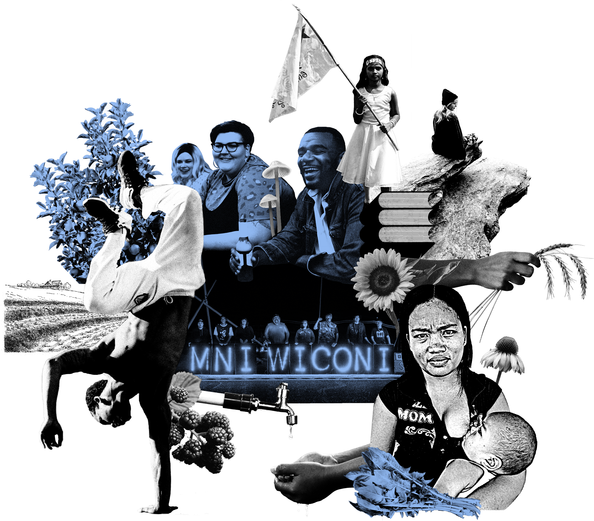
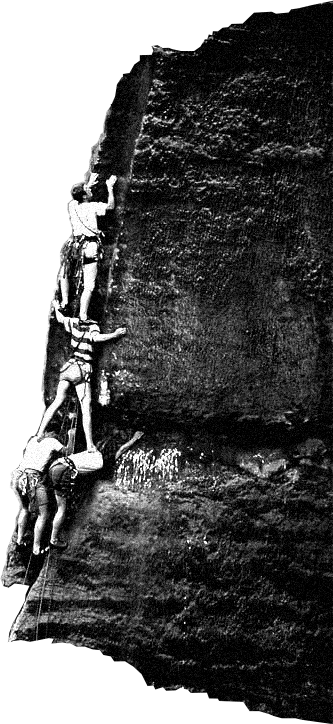
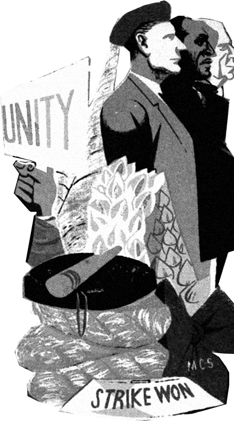

Wellness

A Wellness-centric Future
Community wellness is (arguably) the most important to create a better world. Whatever it takes to ensure collective mental and physical health will promote each individual’s purpose in the community.
…I think everybody got some thinking and cleaning up they can do inside their souls… — Fawziyya Heart
…we need a post-guilt and post-shame world. At the same time, it’s really tricky because you can then veer into sociopathy without any guilt or shame so it’s a little bit of a balance… — Dr. Kimia Pourrezaei
…in Octavia Butler’s work, she presents empathy in a way where people can actually feel the pain of others. The contagion is a model for how people can experience each other. In the future, if people have an awareness of that they’re far more happy because they don’t feel isolated and are aware of how things affect others… — Lara Durback
…when we think about caregiving, it’s very hard for us to conceptualize a world without money, but it’s impossible for us to conceptualize a world without care and without free care being given to us… — Katie Hinchey-Wise, MSc
…I just know how powerful meditation is for me. I thought of this quote the other day… ‘and then she figured it all out, without even opening her eyes’… — Fawziyya Heart
…part of an ideal world is a world without pain: pain in the physical sense and in the emotional sense…For so long, so many groups have suffered pain of death, pain of sickness and illness. Even as technologically advanced as we are, we have not been able to crack cancer and HIV/AIDS…communities (must be) able to voice and drive their own change… — Dr. Christina Harrington
…when you can be accepting of yourself and show compassion and sympathy for yourself, you can do that shit easily for other people because it’s hell to do it for yourself. Once you get to that point where you’re like ‘boo, I’m good. I got you, I got your back, I want to be your friend’ (talking to yourself). It would be easier for you to have that space to be compassionate for someone else… You don’t got time to be hating nobody if you love yourself. You don’t even give space in your chest for hate… — Fawziyya Heart
…I don’t think we could exist without some formal system where we guarantee … — Katie Hinchey-Wise, MSc
…we are still growing up. It is very important to value [ourselves and our] contributions to the world… — Anonymous
…if you can control your thoughts, you can control how you talk to yourself. You start speaking to yourself better. You get a better relationship with yourself. It makes you be able to be with yourself in a way… — Fawziyya Heart
…at the basic level, everyone should be fed, housed, and have access to care. Anything that an individual needs, they will get it… — Anonymous
…your health and your well-being is not tied to your employment, and is not tied to capitalism. It is a right of citizenship, a right of humanness on this earth. You have a right to bread, you have a right to water, you have a right to medicine… — Katie Hinchey-Wise, MSc
…suburbia is not a sustainable way of living. No one needs a large, perfectly-manicured lawn. It takes a great amount of fossil fuels to maintain a lawn while offering practically zero benefits. Having a garden with edible fruit and vegetables, flowers and trees is a much better alternative that is getting more and more traction. Ultra dense places like New York City have serious issues too. Managing basic services like waste management and water supply becomes an expensive task. It’s somewhere in-between. A walkable, bikeable city with a reliable public transportation system that prioritizes the health and well-being of people… — Valerie Frolova
…our world would be a lot better if people were just happier with themselves and not so upset with who they are. Hurt people hurt people in all types of ways throughout life and if you’ve got a chain of people hurting people it’s just going to keep going and going and going and next thing you know that’s just your whole world… — Fawziyya Heart
…everyone’s work is just as important as everybody else’s. One thing that was really hard to understand was that the medical needs of the people with developmental disabilities living in these houses whose parents or families or Medicaid was paying for them to be there, their medical needs were not paramount in comparison to other people in the houses, so we definitely need some sort of system where I don’t think everyone’s needs are exactly the same in the community, and that’s okay by nature of life… — Katie Hinchey-Wise, MSc
…the major barrier to healing the world is intergenerational trauma and so from a very practical perspective it’s going to take at least three generations to clean this up. From a practical perspective, what do we need to happen over the next three generations to clean this up? That gets into case managers, social workers, and access to care issues… — Dr. Kimia Pourrezaei
…I’ve done a lot of teaching and tutoring in San Quentin, and what they really stress is trauma-informed learning but so many people who go in have no idea how to do that… — Lara Durback
…give our kids a better foundation emotionally, help their sense of self, with someone constantly there for them...Meditation would help have kids be more centered… — Anonymous
…self-care might not even be a thing because it just might be the norm of life to take care of yourself. That will just be something that we all just automatically do… — Fawziyya Heart
…we create a better world based on the intention of the world we want. You can feel a general change in energy, where feelings and intentions set this tone that we can all pick up on… — Jason Killinger
…the only thing that’s going to make people feel better is centering themselves on themselves because we are really small, but we are also only one of us. Sounds trite but genuinely, we are the only one of us, and we get one shot… — Katie Hinchey-Wise, MSc
…imagine that if that person truly loved themselves and they were doing what they wanted to do and contributing to the world with their gifts, and felt fulfilled in themselves and felt that they could share their love with other people despite how they fucking look because they love themselves… — Fawziyya Heart
…we need to make sure we’re being mentally and physically and medically taken care of, we need to make sure we have food to eat, and we need to be educating, not just the children, but all of us. Everyone needs to always be learning… — Nicole Rodill
…if physical education was a week and Mental Health education alternated, it would lead to greater awareness of yourself and have some of those ways to express yourself to normalize the strategies… — Anonymous
…I conceive constantly of what America could be like if we would stop saying we’re the best country in the world and start paying attention to other people’s ideas, start opening our eyes and looking outside for systems… — Katie Hinchey-Wise, MSc
…we need to put American pride aside and look at other countries to see what works and what doesn’t, take things and adapt them here in the United States… — Marion Leary
…it’s not going to change until we all understand that we are in a giant bubble and it only works this way here because I’m telling you to learn about America. Your mind will be blown if you learn about the way other people do it. There are tons and tons of different global systems that do better than ours… — Katie Hinchey-Wise, MSc
…health care is a right. It should be single payer. Let the government figure it out. We know that we can’t do health care for profit… — Sameer Soleja
…we could make a conscious change to… have access to universal basic income and universal basic healthcare… — Katie Hinchey-Wise, MSc
…in the future, I really hope that people had agency or self-sovereignty around their health… — Lara Durback
…food security has a lot to do with that as well, we need all people to have access to healthy foods and farm fresh local produce available. Food deserts are just another form of environmental racism that we need to eliminate as soon as possible… — Valerie Frolova
…there would be fewer cars, more people walking and riding their bikes, because that’s what decolonization would account for. It would be more back to the earth. We could still be a city. There are cities all over the earth that have food gardens and networks. Just outside of Atlanta, they’ve done a huge community food forest where people can go and pluck fruit off of the trees. I don’t think being in a city is reason for that not to happen. It’s just a mindset… — Nicole Rodill
…I definitely would like to see safer cities, which means a lot of things. Maybe it means less cars in Center City, more accessible and reliable public transportation. Safer bike lanes, as a biker myself, I see a lot of disrespect from drivers, who park in bike lanes. A safe, bikeable, walkable city that doesn’t depend on car traffic also decreases air pollution… — Valerie Frolova
…personal protective equipment needs to be available to all providers and essential personnel, including grocery clerks and mail carriers…to increase risk and cause illness in those circumstances is unacceptable… — Marion Leary
…the protests have been showing something that people are building or that have been building. They are using communal care, people handing out masks, making sure people are wearing masks, there is water, sunscreen, snacks and giving them to whoever… — Anonymous
…the arts, or entertainment, that’s joyful. That falls into the health category, it’s mental health. To be inspired by artwork and disconnecting from whatever craziness that’s going on in the world, that’s mental health. You go to an art gallery to get inspired. Not necessarily for your next project, but just inspired for life, whatever the days are ahead. I would include the arts as part of our essential program. Especially for children: music, and theater, and creating is essential to their growth and their ability to understand each other and the greater world around them… — Nicole Rodill
…we’re going to have to up our game with how we give people an experience, not just sitting in front of them and singing to them. It has to be an experience… maybe having a 20-people show, maybe you charge like $60–100 per ticket, but you have food there, you have catered drinks, you have some random shit. Maybe you could have a paint party at the show too, just something to make it more special and not like you’re just going out to a live show. Something more couple-y, like an experience. Maybe private chefs… more collaborations with people, something for artists… — Fawziyya Heart
…we need more time to be creative…in a utopian world, everyone creates art. There’s not ‘the artist,’ everyone is an artist… — Dr. Kimia Pourrezaei
…in my utopia, there would be more art and even more bad art. Bad is subjective and anyone making art should be encouraged to do so… — Anonymous
…play is where the most creative solutions come from… — Jason Killinger
Next: Reduce stress


